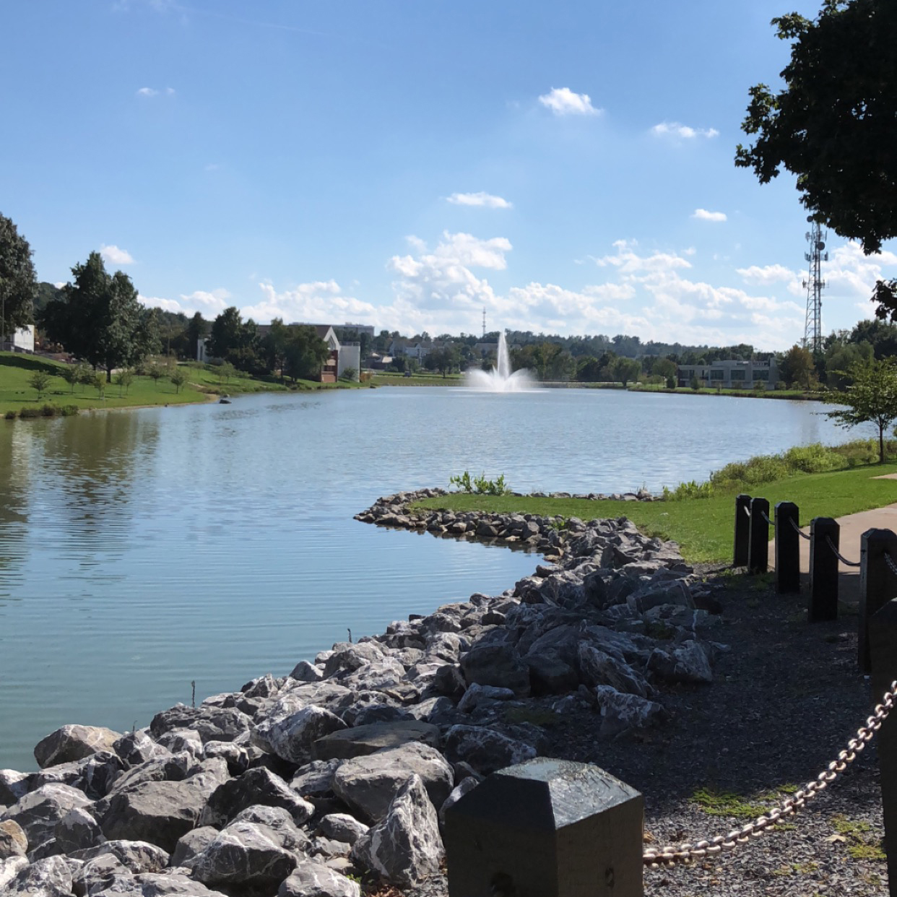

Welcome to The Friendly City!
Harrisonburg, Virginia
Welcome to Harrisonburg, Virginia, located at the heart of the Shenandoah Valley. Harrisonburg is best known for James Madison University, a college that holds over 20,000 students, the historic and booming Downtown area, and its beautiful scenery
This diverse and vibrant town is sure to please everybody. There's so much to do whether you decide to visit the downtown for some local food and craft brews, check out the college life and explore the quad, or spend some time outdoors and in the nature.
Read more about James Madison University
James Madison University is a public college and was founded in 1908...

More from JMU
You don't see the lake on the tour, but you can from our new image gallery including the new dining hall...
The Historic Downtown District
The downtown Historic district was established in 1779 and is centered around the Court Square...

Best Places to Eat Downtown
From Billy Jack's to Clementines, find the best place to a grab a meal while visiting...